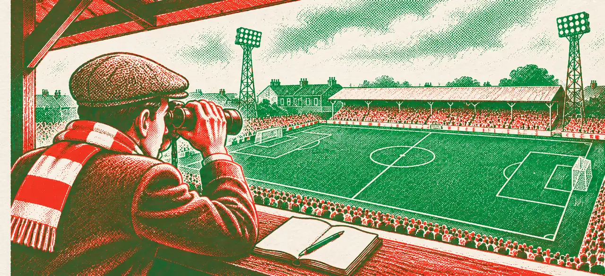

Edge watch
Does Kalshi ever stray far enough from the sharp line to bet? Every stake and snapshot run measures it.

Largest and median gap, every run
Gap is fair probability minus Kalshi's ask after fees. A negative median means the typical market is priced worse than fair. 11 readings above +15% are pinned to the top edge as hollow circles. 4 came before 22 September, when the largest gaps still included live, in-play markets (see How it works). The other 7 are from 11 Oct. Two contaminated readings are left out.
The shadow ledger
The arms only record the markets they bet, which hides how the rest behave. The shadow ledger records every market priced, bet or not, with its close and result, so the gap can be studied without that selection effect. It feeds the longshot-bias study planned for late December.
No shadow rows yet. The first land with the next stake run.